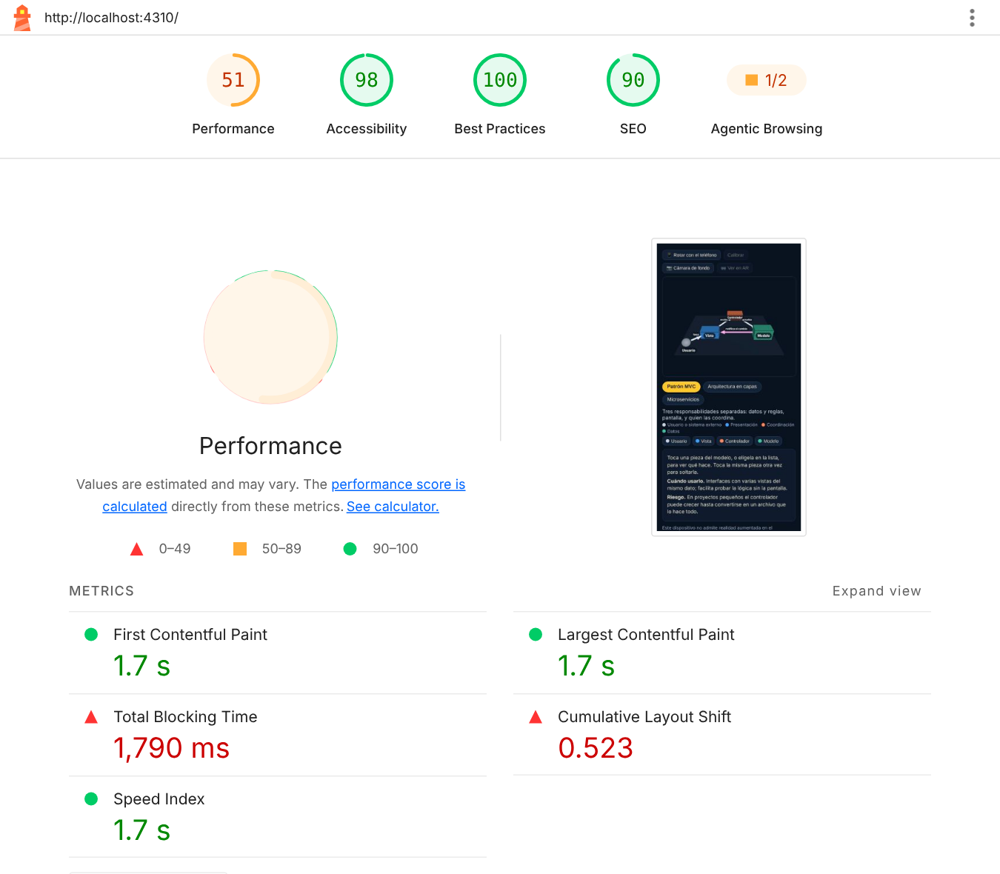
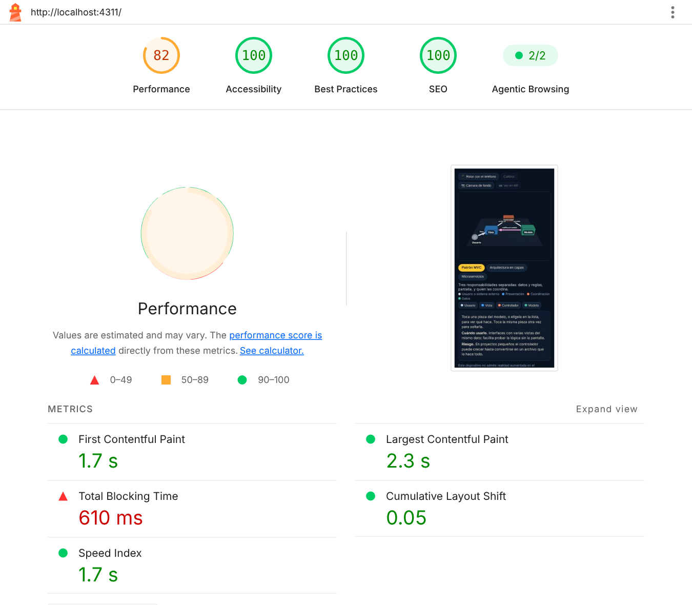

<main> envuelve las zonas de la página; como el body ya centraba, el main repite esa columna:
Portada
Electiva · PWA — Sub-bloque B · Proyecto Módulo AR · Sesión 16 de 19
Lighthouse y cierre del proyecto
Medimos el Atlas 3D con Lighthouse, arreglamos lo que el informe señala, volvemos a medir con las cifras a la vista y cerramos el Módulo AR con una lista de verificación que se ejecuta sola.
AsignaturaElectiva - PWA
Sesión16 de 19 · Proyecto Módulo AR
InstituciónUPTC
SESIÓN 16
Medir antes de arreglar
Un informe de Lighthouse no es un examen: es una lista de preguntas con cifras. Hoy se mide con método, se cambia una cosa por hallazgo y se vuelve a medir.
Línea baseCuatro hallazgosLista de cierre
Antes de empezar
Objetivos de aprendizaje
- Explicar qué mide Lighthouse y qué no (la instalabilidad ya no es una categoría).
- Medir con método: varias corridas, la mediana y una línea base.
- Convertir cada hallazgo en un cambio y comprobar con una segunda medición si ayudó.
- Reservar espacio para lo que JavaScript dibuja tarde y dibujar bajo demanda.
- Reconocer que arreglar una métrica puede empeorar otra.
- Cerrar el Módulo AR con una lista de verificación que se ejecuta sola.
.zip
Recursos: pwa-ar-objetos3d-sesion41.zip
CHECKPOINT · CIERRE DE LA SESIÓN 41 · PUNTO DE PARTIDA
El Atlas con instalación guiada y estado de conexión. Es lo que Lighthouse audita primero.
.zip
Recursos: pwa-ar-objetos3d-sesion42.zip
VERSIÓN TERMINADA · + INFORMES HTML «ANTES» Y «DESPUÉS»
Lighthouse · 1.1
Un termómetro de la carga, no una prueba de la app
1
Rendimiento
Qué tan rápido aparece y se vuelve usable: FCP, LCP, TBT, CLS y Speed Index.
2
Accesibilidad · SEO · Buenas prácticas
Etiquetas, contraste, idioma, HTTPS, descripción de la página.
3
Navegación con agentes
Novedad de la v13: revisa, entre otras cosas, que la página no cambie de lugar mientras alguien interactúa.
Ya no existe la categoría «PWA» (desde la v12). La instalabilidad se le pregunta a Chrome. Lighthouse tampoco prueba la AR ni cómo se siente girar el modelo.
Lighthouse · 1.2
La instalabilidad, según el propio Chrome
Terminal
$ node test_s42.js (líneas 2 y 3)
2) manifest → errores de Chrome: [] | name: Atlas 3D de Arquitectura de Software | display: standalone | start_url: ./ | iconos: ["192x192","512x512","512x512/maskable"]
3) Chrome dice: errores de instalabilidad → []Lighthouse · 1.3
Medir con método
- Servir la compilación tal cual (la de la Sesión 41, sin tocar nada).
- Correr Lighthouse tres veces (móvil, valores por defecto) y quedarse con la mediana.
- Un cambio por hallazgo y tres corridas más después de cada uno.
Terminal
npm run build
npx serve dist -l 4310
npx lighthouse http://localhost:4310/ \
--chrome-flags="--headless=new" \
--output=html --output=json --output-path=./informeNo son las cifras de tu teléfono: las corridas de hoy se hicieron en un Chromium sin tarjeta gráfica y con lentitud simulada. Sirven para comparar antes y después en las mismas condiciones.
Lighthouse · 1.4
La línea base: la versión de la Sesión 41
Terminal
$ python3 resumen.py base-3.report.json
Lighthouse 13.6.0 | mobile | throttling simulate
performance 51
accessibility 98
best-practices 100
seo 90
agentic-browsing 57
first-contentful-paint 1.7 s 0.93
largest-contentful-paint 1.7 s 0.99
total-blocking-time 1,790 ms 0.1
cumulative-layout-shift 0.523 0.15
speed-index 1.7 s 1
interactive 7.8 s 0.44
--- no aprobadas (score<1) ---
[performance] first-contentful-paint: 0.93 — First Contentful Paint | 1.7 s
[performance] largest-contentful-paint: 0.99 — Largest Contentful Paint | 1.7 s
[performance] total-blocking-time: 0.1 — Total Blocking Time | 1,790 ms
[performance] cumulative-layout-shift: 0.15 — Cumulative Layout Shift | 0.523
[performance] bf-cache: 0 — Page prevented back/forward cache restoration | 1 failure reason
[accessibility] landmark-one-main: 0 — Document does not have a main landmark. |
[best-practices] valid-source-maps: 0 — Missing source maps for large first-party JavaScript |
[seo] meta-description: 0 — Document does not have a meta description |
[agentic-browsing] cumulative-layout-shift: 0.15 — Cumulative Layout Shift | 0.523Lighthouse · 1.5
El informe «antes»

Los colores lo dicen: TBT 1790 ms y CLS 0,523 en rojo. FCP y LCP, en verde. El texto del informe viene en inglés.
Lighthouse · 1.6
Cuatro hallazgos, un cambio para cada uno
1
Faltan etiquetas
Sin main (accesibilidad) ni meta description (SEO).
2
La página salta
CLS 0,523: lo que JavaScript dibuja tarde empuja todo lo demás.
3
Se dibuja sin parar
Una escena quieta se redibuja 60 veces por segundo.
4
Un solo archivo
Más de 500 kB juntos: una tarea larga que bloquea el hilo.
Hallazgo 1 · 2.1
Dos etiquetas que faltaban
index.html (la descripción)
<meta name="description" content="Catálogo interactivo en 3D de patrones de arquitectura de software (MVC, capas y microservicios), con realidad aumentada y uso sin conexión." />src/style.css (el main)
.contenido { width: 100%; display: flex; flex-direction: column; align-items: center; }Accesibilidad 98 → 100 y SEO 90 → 100. El rendimiento casi no se mueve: eran etiquetas, no velocidad.
Hallazgo 2 · 3.1
Lo que JavaScript dibuja tarde empuja todo
1
Qué es un desplazamiento
Algo que ya se veía cambia de lugar porque aparece contenido nuevo encima. Lo bueno es CLS < 0,1; el Atlas tenía 0,523.
2
Dos zonas culpables
El visor (el canvas llega al ejecutarse el código) y el panel del modelo (pestañas, leyenda, chips, ficha). Vacíos ocupan nada; llenos, empujan.
La solución no es que aparezcan antes: es reservarles su sitio desde el principio.
Hallazgo 2 · 3.2
Reservar el espacio con CSS
src/style.css (reservar el espacio)
.modelo-panel { min-height: 25em; }
/* El visor también se llena con JavaScript (el canvas llega tarde): su alto se reserva con la misma
proporción que usa visor.ts (alto = 0,75 × ancho, máximo 560 px). Sin esto, todo lo de abajo saltaba. */
.visor { aspect-ratio: 4 / 3; max-height: 560px; }El alto del visor es siempre 0,75 × su ancho (máx. 560 px), igual que en
visor.ts: se le dice a CSS lo mismo.Hallazgo 2 · 3.3
Cuánto aporta cada reserva
| Variante (código final, quitando reservas) | CLS · mediana de 3 |
|---|---|
| Sin reservar nada | 0,523 |
Solo el alto del panel (min-height) | 0,447 |
Panel y visor (min-height + aspect-ratio) | 0,050 |
El panel solo no bastaba: el visor, que también llega tarde, seguía empujando. En la medición por pasos el TBT subió de 1850 a 2203 ms: ese costo lo atienden los hallazgos 3 y 4.
Hallazgo 3 · 4.1
Dibujar solo cuando algo cambió
Quien cambia algo (pieza, modelo, tamaño, AR) levanta sucio; el bucle dibuja si está levantada o si los controles mueven la cámara.
src/visor.ts (el bucle)
function bucle() {
animacion = requestAnimationFrame(bucle);
if (porSensores) {
// Interpolación: alcanza el objetivo poco a poco (filtra el temblor del sensor).
grupo.rotation.x += (objetivoX - grupo.rotation.x) * 0.15;
grupo.rotation.y += (objetivoY - grupo.rotation.y) * 0.15;
sucio = true; // con sensores la escena se mueve sola
}
const camaraSeMovio = controles.update(); // true mientras el usuario (o la inercia) mueve la cámara
if (sucio || camaraSeMovio) {
sucio = false;
renderer.render(escena, camara);
}
}
bucle();Delicado: si se olvida levantar la bandera, esa acción no se ve. Por eso la prueba cuenta llamadas reales de WebGL. Paso: rendimiento 69 → 75, TBT 2203 → 1081 ms.
Hallazgo 4 · 5.1
Three.js en su propio archivo
vite.config.ts (separar Three.js)
build: {
rollupOptions: {
output: {
// Sesión 42: Three.js (la mayor parte del peso) va en su propio archivo: el código de la app
// cambia cada sesión, Three.js casi nunca, y así son dos descargas que se pueden cachear por separado.
manualChunks: { three: ["three"] },
},
},
},Three.js casi no cambia; el código de la app cambia cada sesión. Dos archivos se cachean por separado y el trabajo se reparte en tareas más cortas.
Hallazgo 4 · 5.2
La compilación, tal cual
Terminal
$ npm run build
✓ 27 modules transformed.
dist/index.html 4.29 kB │ gzip: 1.52 kB
dist/assets/index-CYynvKCQ.css 6.44 kB │ gzip: 1.82 kB
dist/assets/workbox-window.prod.es5-BqEJf4Xk.js 5.71 kB │ gzip: 2.34 kB
dist/assets/index-Z10u6Kuz.js 62.57 kB │ gzip: 20.50 kB
dist/assets/three-DFUxCYKs.js 482.73 kB │ gzip: 122.01 kB
✓ built in 1.80s
PWA v1.3.0
✓ 89 modules transformed.
dist/sw.mjs 27.66 kB │ gzip: 9.16 kB
✓ built in 439ms
PWA v1.3.0
mode injectManifest
format: es
precache 9 entries (558.82 KiB)Archivo principal: 544,86 → 62,57 kB. Three.js: 482,73 kB aparte. Precaché: 9 entradas (558,82 KiB), generado solo. Paso: rendimiento 75 → 84, TBT 1081 → 517 ms.
Resultado · 6.1
El resultado, paso a paso

Mediana de 3 corridas por etapa, acumulando cambios. Medición final de la versión terminada: 82, 84 y 81 → mediana 82; el Paso 4 (84) es la misma versión: dos puntos de ruido solo por repetir.
Resultado · 6.2
Antes y después (mediana de 3)
| Métrica | Antes (S41) | Después (S42) |
|---|---|---|
| Rendimiento | 51 | 82 |
| Accesibilidad | 98 | 100 |
| Buenas prácticas | 100 | 100 |
| SEO | 90 | 100 |
| CLS | 0,523 | 0,05 |
| TBT | 1786 ms | 608 ms |
| Interactiva en | 7,8 s | 2,5 s |
| FCP | 1696 ms | 1740 ms |
| LCP | 1696 ms | 2329 ms (peor) |
Resultado · 6.3
El informe «después»

La corrida cuyo resultado coincide con la mediana. Cuatro categorías en 100 o casi.
Resultado · 6.4
El LCP empeoró, y es una lección
De 1,7 a 2,3 s. No es que la página sea más lenta: al reservar espacio cambió qué elemento considera Lighthouse «el más grande». Antes era un párrafo estático (
p.aviso-demo) que el desplazamiento empujaba fuera de la pantalla; ahora es el texto de la ficha de la pieza, que JavaScript rellena un poco después.Se arregló un defecto real (CLS) y la métrica vecina empezó a medir otra cosa. Ambos valores están en verde: se decidió no tocar el diseño para engañar a una métrica.
Resultado · 6.5
Lo que quedó sin arreglar, a propósito
- bf-cache: una página que puede abrir WebXR no es elegible; es inherente a la app.
- JavaScript sin usar (≈ 44 KiB): partes de Three.js; quitarlas exige importar clase por clase; el costo supera la ganancia hoy.
- CSS que bloquea el primer dibujo (≈ 90–150 ms): son 6 kB; incrustarlo complica la compilación por unos milisegundos.
- TBT de 608 ms: es sobre todo Three.js inicializándose; mejorar de verdad pediría cargar el visor más tarde.
Cierre del módulo · 7.1
La lista de verificación del Módulo AR
Terminal
$ node test_s42.js
1) documento → {"lang":"es","viewport":"width=device-width, initial-scale=1.0","descr":140,"tema":"#0b1220","main":1,"h1":1,"contextoSeguro":true,"titulo":"Atlas 3D de Arquitectura de Software"}
2) manifest → errores de Chrome: [] | name: Atlas 3D de Arquitectura de Software | display: standalone | start_url: ./ | iconos: ["192x192","512x512","512x512/maskable"]
3) Chrome dice: errores de instalabilidad → []
4) service worker → {"activo":true,"controla":true,"precache":9}
5) servidor caído y recarga → {"canvas":1,"pestanas":3}
6) desplazamiento de diseño acumulado (CLS) al cargar → 0.050
7) escena quieta durante 1,5 s → llamadas de dibujo: 0
8) arrastrar para girar → llamadas de dibujo nuevas: sí (744)
9) tras soltar y pasar la inercia → vuelve a quedarse quieta: sí
10) elegir una pieza → llamadas de dibujo nuevas: sí
11) cambiar de modelo → llamadas de dibujo nuevas: sí
12) cambiar el tamaño de la ventana → llamadas de dibujo nuevas: sí
pageerrors: []
RESULTADO: todo en ordenCierre del módulo · 7.2
Qué demuestra cada línea
- (1) idioma, viewport, descripción de 140 caracteres, un
main, unh1, contexto seguro. - (2-3) manifest e instalabilidad según el propio Chrome: sin errores.
- (4) Service Worker activo y controlando, 9 entradas de precaché.
- (5) con el servidor caído, el visor se monta y hay 3 pestañas.
- (6) CLS 0,050.
- (7) una escena quieta no hace ni una llamada de dibujo.
- (8-12) cada acción sí provoca dibujo; tras la inercia el visor vuelve a quedarse quieto.
Cierre del módulo · 7.3
¿Y si la lista diera siempre verde?
Terminal
$ S42DIR=s41 node test_s42.js
1) documento → {"lang":"es","viewport":"width=device-width, initial-scale=1.0","descr":0,"tema":"#0b1220","main":0,"h1":1,"contextoSeguro":true,"titulo":"Atlas 3D de Arquitectura de Software"}
✗ FALLÓ: meta description
✗ FALLÓ: un <main>
2) manifest → errores de Chrome: [] | name: Atlas 3D de Arquitectura de Software | display: standalone | start_url: ./ | iconos: ["192x192","512x512","512x512/maskable"]
3) Chrome dice: errores de instalabilidad → []
4) service worker → {"activo":true,"controla":true,"precache":8}
5) servidor caído y recarga → {"canvas":1,"pestanas":3}
6) desplazamiento de diseño acumulado (CLS) al cargar → 0.498
✗ FALLÓ: CLS debe ser menor que 0,1
7) escena quieta durante 1,5 s → llamadas de dibujo: 2160
✗ FALLÓ: una escena quieta no debe dibujar
8) arrastrar para girar → llamadas de dibujo nuevas: sí (768)
9) tras soltar y pasar la inercia → vuelve a quedarse quieta: no
✗ FALLÓ: tras la inercia debe volver a no dibujar
10) elegir una pieza → llamadas de dibujo nuevas: sí
11) cambiar de modelo → llamadas de dibujo nuevas: sí
12) cambiar el tamaño de la ventana → llamadas de dibujo nuevas: sí
pageerrors: []
RESULTADO: hay 5 fallosCinco fallos, los cinco esperables: sin meta ni main, CLS 0,498, 2160 dibujos con la escena quieta y que no se aquieta tras la inercia. Lo demás pasa en ambas: es lo que no se tocó.
Cierre del módulo · 7.4
Regresión: pruebas de las sesiones 40 y 41 sobre el código de hoy
Terminal
$ S40DIR=s42 node test_s40.js | tail -8
I1) base v2 preparada con identificadores de la demo
I2) tras abrir la app → {"version":3,"progreso":[["microservicios",false,333],["mvc",true,111]],"descargas":[["capas","pendiente"],["mvc","pendiente"]]}
J1) antes de usar AR → rastro: null
J2) dentro de AR → rastro: activa | diagnóstico: Última sesión de AR: sin registro.
J3) tras salir → rastro: fin-ok
J4) diagnóstico → Última sesión de AR: terminó completa (hace 1 s).
J5) rastro interrumpido simulado, tras recargar → Última sesión de AR: se interrumpió en el paso «fin-3-ancla» (hace 4 s). | panel abierto: true
pageerrors: []
$ S41DIR=s42 node test_s41.js | tail -6
G2) se corta la red → banda: Sin conexión: los modelos y las fichas descargadas siguen disponibles.
G3) sin red se cambia de modelo → «Niveles apilados: cada capa solo habla con la inme…»
G4) vuelve la red → banda: Volvió la conexión.
G5) 3,3 s después → banda: null
pageerrors: []
RESULTADO: todo en orden
$ node test_subruta.js
subruta → {"scope":"http://localhost:4195/atlas-3d/","activo":true,"manifest":{"start":"./","scope":"./"},"iconoStatus":200,"caches":["modelos-3d","workbox-precache-v2-http://localhost:4195/atlas-3d/"]}
recarga sin conexión: canvas montado = 1
ficha → ["http://localhost:4195/atlas-3d/modelos/mvc.json",200]
descarga desde el botón → caché modelos-3d: ["http://localhost:4195/atlas-3d/modelos/capas.json","http://localhost:4195/atlas-3d/modelos/microservicios.json","http://localhost:4195/atlas-3d/modelos/mvc.json"]
peticiones fuera de la subruta o 404: [] | pageerrors: []Cierre del módulo · 7.5
La lista final del Módulo AR
| Qué se verifica | Cómo | Estado |
|---|---|---|
Idioma, main, h1, descripción, viewport | Lighthouse y test_s42.js | Verificado |
Manifest, iconos, standalone; sin obstáculos de instalabilidad | Chrome (CDP) | Verificado |
| Service Worker activo; precaché de 9 | test_s42.js | Verificado |
| Funciona sin servidor | Servidor caído | Verificado |
| CLS bajo; escena quieta sin dibujar | Lighthouse y WebGL | Verificado |
| Sin fugas de GPU; subruta sin rutas absolutas | Conteo y test_subruta.js | Verificado |
| Botón «Instalar» y diálogo del sistema | Solo un teléfono | En tu teléfono |
| AR en el dispositivo; entrar y salir sin romper | Teléfono con ARCore | En tu teléfono |
| Girar con el dedo o los sensores, fluido | Solo un teléfono | En tu teléfono |
Teléfono · 8.1
Publica la versión y mídela tú
- Copia
pwa-ar-objetos3d-sesion42.zipsobre tu carpeta del proyecto (conserva.github/workflows/pages.yml). git add .,git commit,git push(si lo rechaza:git pull --no-rebase -X ours --no-edit). Espera la marca verde en Actions.- Mide en Chrome del escritorio: ventana de incógnito, F12 → Lighthouse → «Móvil» → Analizar. Tres veces, y anota la mediana.
- En tu teléfono: el modelo gira y se queda quieto al soltar; elegir pieza y cambiar de modelo se ve al instante; «Ver en AR» entra y sale; la rotación por sensores sigue fluida.
Lo más útil: tus tres números de rendimiento y tu CLS, y si algo dejó de verse o moverse con el dibujo bajo demanda.
Actividades
Actividad 1: Mide tu propia página, con método
1
Mide tu propia página, con método
INDIVIDUAL · 60 MIN
Elige un proyecto tuyo publicado. Corre Lighthouse tres veces y anota la mediana de cada categoría y de FCP, LCP, TBT y CLS. Identifica los dos hallazgos de más impacto y explica qué los causa.
Entregable: la tabla de las tres corridas con su mediana y el diagnóstico.
Actividades
Actividad 2: Un cambio, una medición
2
Un cambio, una medición
INDIVIDUAL · 60 MIN
Aplica uno solo de los arreglos (p. ej., aspect-ratio en un contenedor que JavaScript llena), mide tres veces y compara con la línea base. Si otra métrica empeora, explica por qué.
Para pensar: ¿por qué es un error cambiar tres cosas y medir una vez?
Entregable: el cambio, la tabla antes/después y la explicación.
Actividades
Actividad 3: Rompe el dibujo bajo demanda
3
Rompe el dibujo bajo demanda
EN PAREJAS · 45 MIN
Quiten sucio = true; de la rama de «elegir una pieza» en visor.ts, recompilen y ejecuten test_s42.js. ¿Qué línea falla? Si ninguna, escriban el caso que falta; luego restauren la línea.
Entregable: la salida con la línea quitada, el caso nuevo si hizo falta y la salida restaurada.
Actividades
Actividad 4: El LCP: ¿cuál es «el elemento más grande»?
4
El LCP: ¿cuál es «el elemento más grande»?
INDIVIDUAL · 60 MIN
En los informes de los recursos, expande «Largest Contentful Paint element» en el «antes» y en el «después». Anota qué elemento es en cada uno y propón un cambio que acerque el LCP al valor anterior sin volver a mover la página.
Entregable: los dos elementos, la propuesta y su costo.
Cierre
Resumen de la sesión
- La instalabilidad ya no es categoría de Lighthouse: se le pregunta a Chrome.
- Se mide con método: varias corridas, la mediana, línea base. Se comparan cambios en las mismas condiciones.
- Lo que se dibuja tarde empuja el diseño: se reserva su espacio. CLS 0,523 → 0,05.
- Una escena quieta no se dibuja: dibujo bajo demanda, comprobado con llamadas reales de WebGL.
- Three.js en su propio archivo: TBT 1786 → 608 ms y caché por separado.
- Arreglar una métrica puede mover otra (LCP 1,7 → 2,3 s); se decide con los datos a la vista.
- La lista de cierre se ejecuta sola y se probó que falla sobre la versión vieja.
Cierre
Próxima sesión
Sesión 43: el Atlas 3D en React. El mismo Atlas reconstruido con React, para ver qué cambia y qué se mantiene (visor, Service Worker, modelos como datos), con las mediciones de hoy como punto de comparación.
Cierre
Referencias
[1] Chrome for Developers, "Lighthouse," developer.chrome.com/docs/lighthouse.
[2] web.dev, "Cumulative Layout Shift" y "Optimize Cumulative Layout Shift," web.dev/articles/cls.
[3] web.dev, "Total Blocking Time" y "Largest Contentful Paint," web.dev/articles.
[4] Chrome DevTools Protocol, dominio "Page" (
getAppManifest, getInstallabilityErrors).[5] Rollup
output.manualChunks; Vite, "Building for Production," vite.dev/guide/build.[6] MDN Web Docs,
aspect-ratio y <main>, developer.mozilla.org.Cierre
Actualiza tu repositorio
Como en cada sesión del Sub-bloque B: sube el cambio de hoy a tu propio repositorio.
Terminal
git add .
git commit -m "Lighthouse: espacio reservado, dibujo bajo demanda y Three.js aparte"
git push
Clic o → para continuar
01 / 35